開挖之穩定性分析
0一個開挖，兩個敵人
開挖穩定這個單元，公式一大堆，底層只有一句話：一個開挖，兩個獨立的敵人。
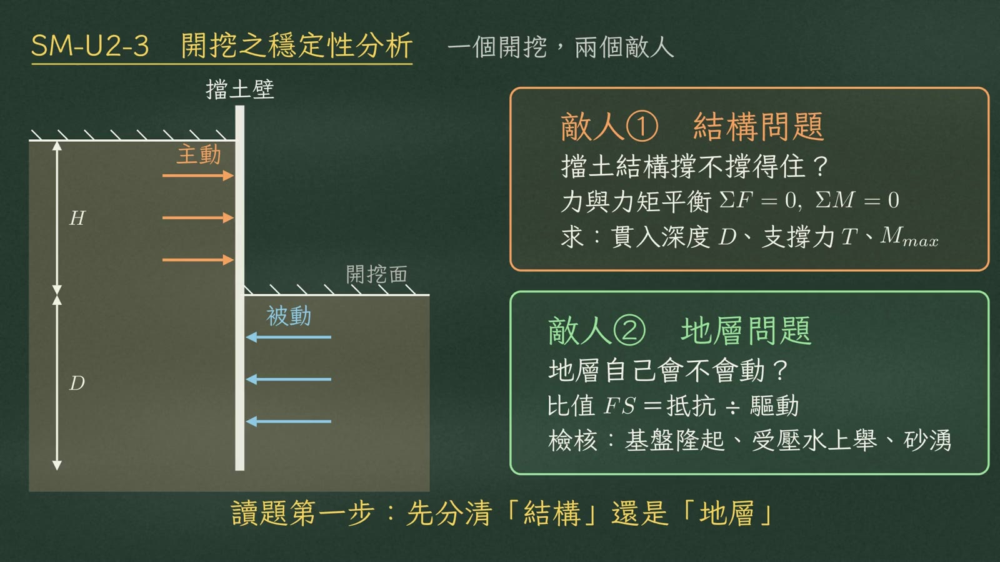
| 問的是 | 工具 | 求／檢核 | |
|---|---|---|---|
| 敵人① 結構問題 | 擋土結構撐不撐得住 | 力與力矩平衡 \(\Sigma F=0,\ \Sigma M=0\) | 貫入深度 \(D\)、支撐力 \(T\)、牆體最大彎矩 \(M_{max}\) |
| 敵人② 地層問題 | 地層自己會不會動 | 比值 \(FS=\)抵抗 ÷ 驅動 | 基盤隆起、受壓水上舉、砂湧 |
牆打得再深，受壓水層照樣把坑底頂起來；地層再好，支撐算錯一樣會垮。
1土壓力：土水分離
先講土壓力的基本功。砂土透水快，用有效應力。土壓力只用有效單位重乘 \(K_a\)；水壓力另外全額加上，等於 \(\gamma_w z\)，\(K=1\)，一分都不能打折。
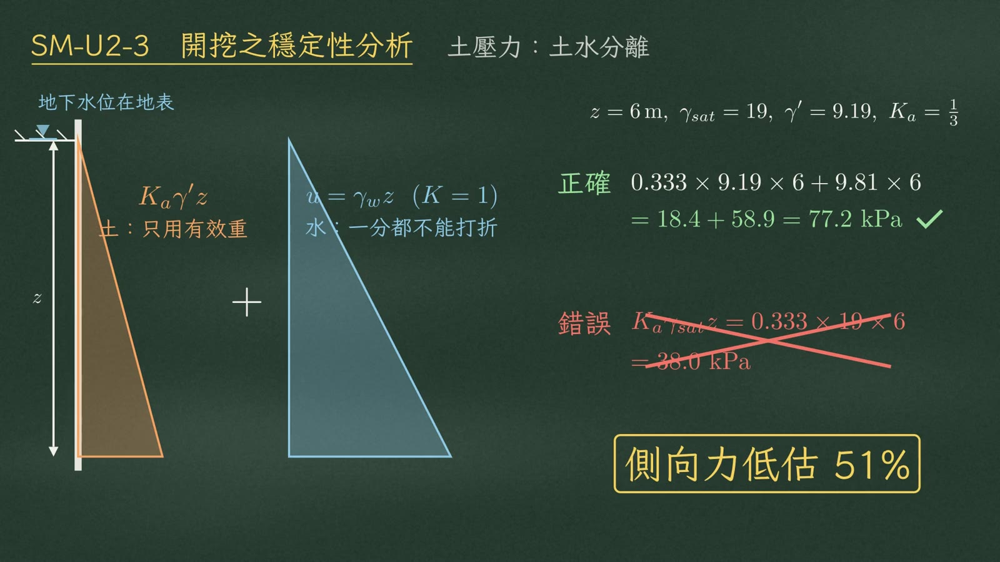
以 6 m 深為例（\(\gamma_{sat}=19,\ \gamma'=9.19,\ K_a=\tfrac13\)）：
| 算式 | 結果 | |
|---|---|---|
| 正確 | \(0.333\times9.19\times6+9.81\times6=18.4+58.9\) | \(77.2\ \text{kPa}\) |
| 錯誤 | \(K_a\gamma_{sat}z=0.333\times19\times6\) | \(38.0\ \text{kPa}\) |
2淨抵抗 砂土 vs 黏土
開挖面以下的淨抵抗，砂土和黏土完全不同。
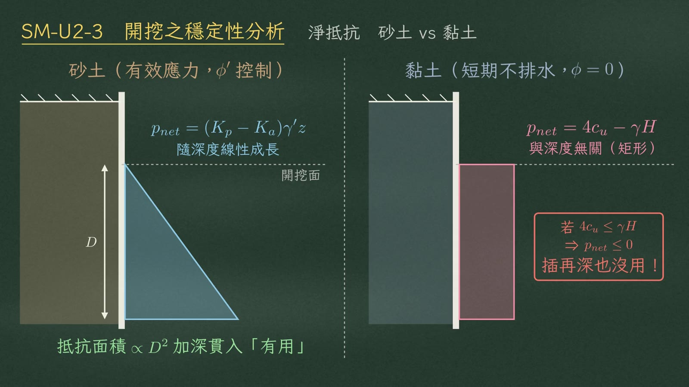
| 淨被動壓力 | 形狀 | 加深貫入 | |
|---|---|---|---|
| 砂土（有效應力，\(\phi'\) 控制） | \(p_{net}=(K_p-K_a)\gamma' z\) | 隨深度線性成長（三角形） | 有用：抵抗面積 \(\propto D^2\) |
| 黏土（短期不排水，\(\phi=0\)） | \(p_{net}=4c_u-\gamma H\) | 與深度無關（矩形） | 視 \(4c_u\) 與 \(\gamma H\) 大小 |
3靈魂指標 穩定數 Ns
把黏土淨抵抗的式子除以 \(c_u\)，就得到貫穿整個單元的靈魂指標——穩定數：
所以 \(N_s=4\) 就是抵抗歸零的臨界點。
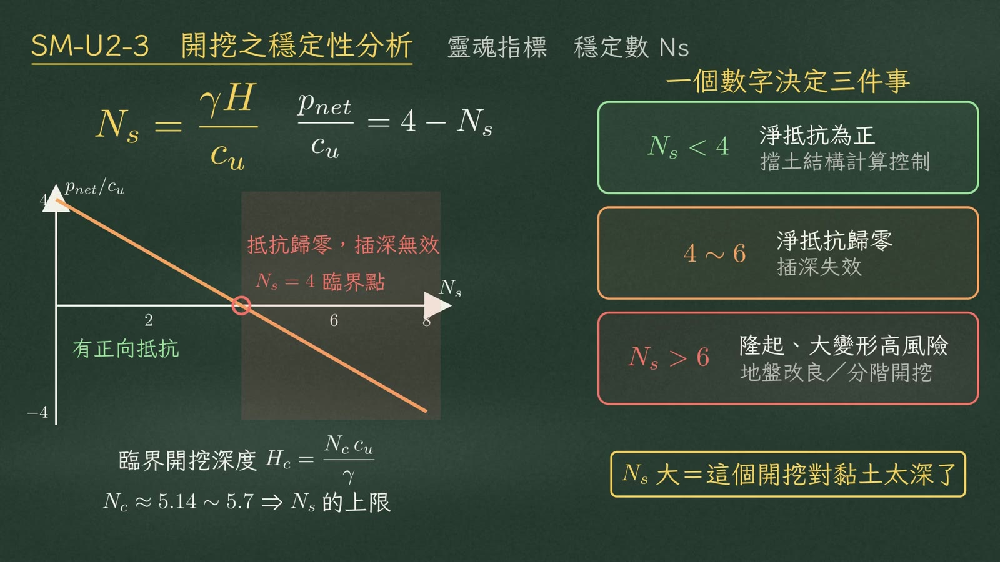
一個數字同時決定三件事：
| \(N_s\) | 狀態 | 意義 |
|---|---|---|
| \(N_s<4\) | 淨抵抗為正 | 由擋土結構計算控制 |
| \(4\sim6\) | 淨抵抗歸零 | 插深失效 |
| \(N_s>6\) | 基盤隆起、大變形高風險 | 要地盤改良或分階開挖 |
順帶記住臨界開挖深度：
換算過來就是 \(N_s\) 的上限。
430 秒讀題
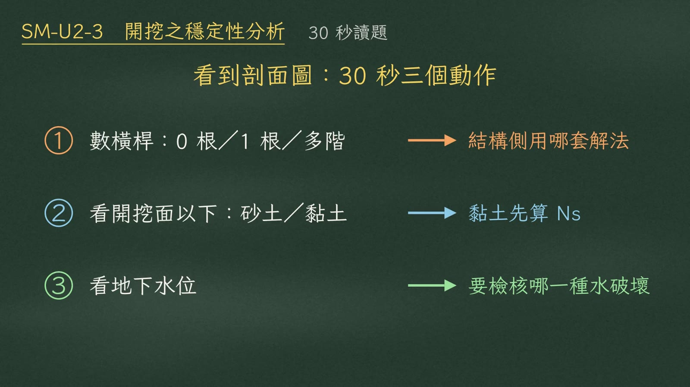
| 動作 | 看什麼 | 決定什麼 |
|---|---|---|
| ① 數橫桿 | 0 根、1 根還是多階 | 結構側用哪套解法 |
| ② 看開挖面以下 | 砂土還是黏土 | 黏土先算 \(N_s\) |
| ③ 看地下水位 | 水位條件 | 要檢核哪一種水的破壞 |
50 根橫桿 懸臂式
零根橫桿，是懸臂式擋土壁。沒有支撐，整支樁繞著樁底附近某個點旋轉，旋轉點以下，主動和被動左右互換。只剩土壓力自己對自己取矩這一條方程式 \(\Sigma M=0\)。
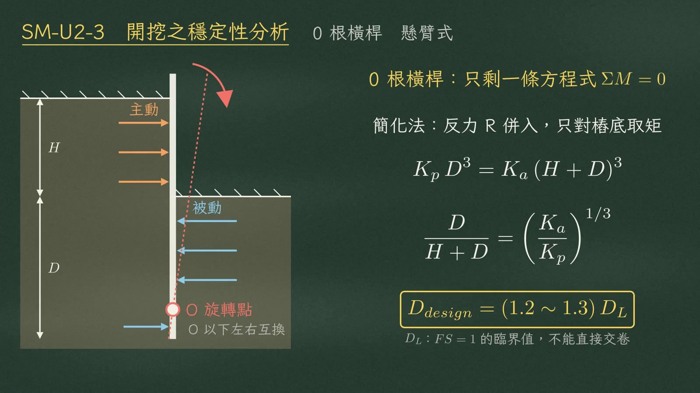
簡化法把樁底反力 \(R\) 併入，只對樁底取矩：
開三次方就得臨界深度。
61 根橫桿 自由端 vs 固定端
一根橫桿，是單支撐或地錨。看的是樁尖能不能轉。
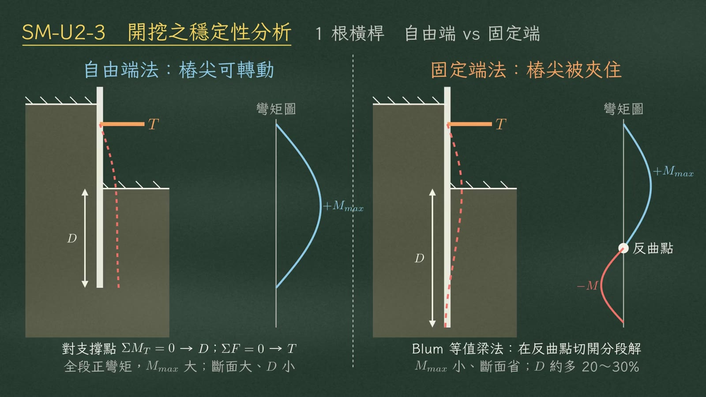
| 自由端法 | 固定端法 | |
|---|---|---|
| 適用 | 貫入淺、插在軟弱層，樁尖可以轉 | 貫入夠深，把樁尖夾住 |
| 解法 | 對支撐點取矩 \(\Sigma M_T=0\) 求 \(D\)；水平力平衡 \(\Sigma F=0\) 求 \(T\) | Blum 等值梁法：在反曲點切開分段求解 |
| 彎矩 | 全段正彎矩，\(M_{max}\) 較大 | 出現負彎矩和反曲點，彎矩較小、斷面省 |
| 貫入深度 | \(D\) 小 | \(D\) 大約多 20～30% |
7多階支撐 Peck 包絡線
多階支撐為什麼不用三角形？因為頂部先撐住、變形小，中下部才變形，壓力被拱效應往上重分配。
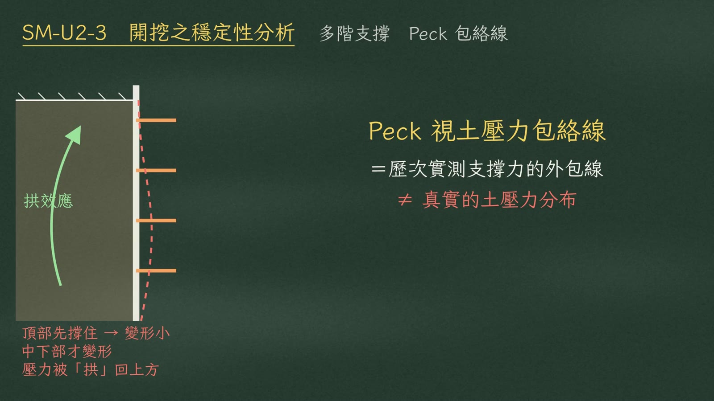
所以改用 Peck 包絡線——它是歷次實測支撐力的外包線，不是真實的土壓力分布。
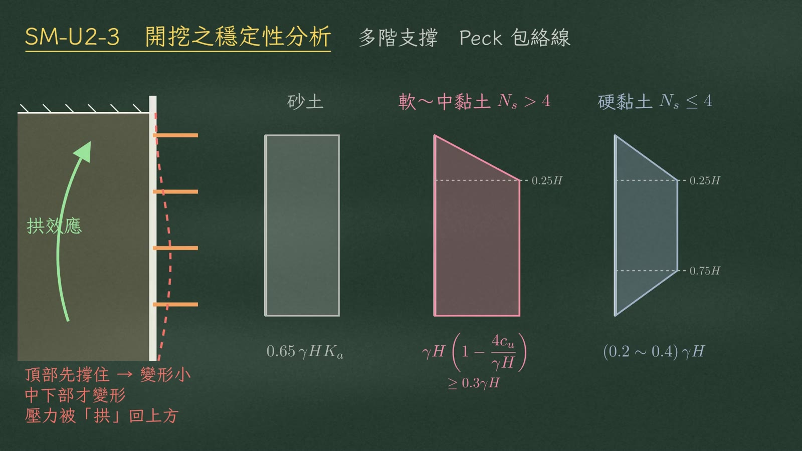
| 土層 | 適用 | 形狀 | 壓力值（黑板） |
|---|---|---|---|
| 砂土 | — | 整段矩形 | \(0.65\,\gamma H K_a\) |
| 軟～中等黏土 | \(N_s>4\) | 上方 \(0.25H\) 漸增的梯形 | \(\gamma H\!\left(1-\dfrac{4c_u}{\gamma H}\right)\ge0.3\gamma H\) |
| 硬黏土 | \(N_s\le4\) | 上下各 \(0.25H\) 收斂到零 | 中段 \((0.2\sim0.4)\,\gamma H\) |
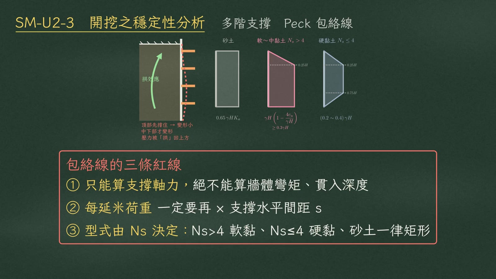
- 只能算支撐軸力，絕不能拿來算牆體彎矩或貫入深度。
- 算出的每延米荷重，一定要再乘支撐水平間距 \(s\)。
- 型式由 \(N_s\) 決定，砂土一律矩形。
8基盤隆起
接著換敵人二。基盤隆起，是一個倒過來的承載力破壞：牆背土柱的重量當載重，坑底黏土的剪力強度當承載力。
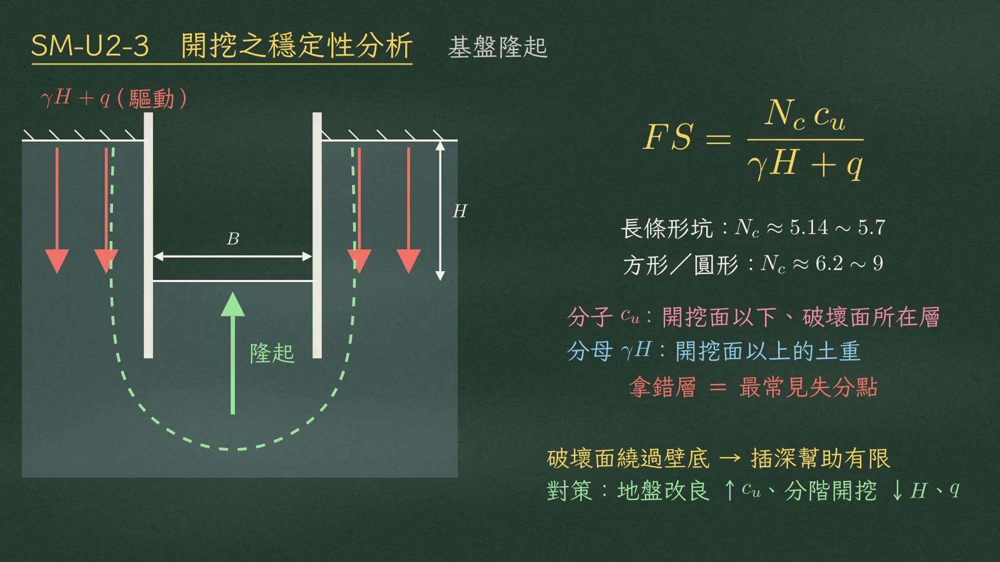
破壞面繞過壁底整體滑動，插深幫助有限；有效對策是地盤改良（↑\(c_u\)），或分階開挖降低 \(H\) 和 \(q\)。
9受壓水上舉
受壓水上舉，是坑底剩下的不透水層，被下方受壓水層的水壓整片頂起來。
分子是坑底殘留黏土的自重，分母是受壓水層的靜水壓，通常要求 1.1～1.2。
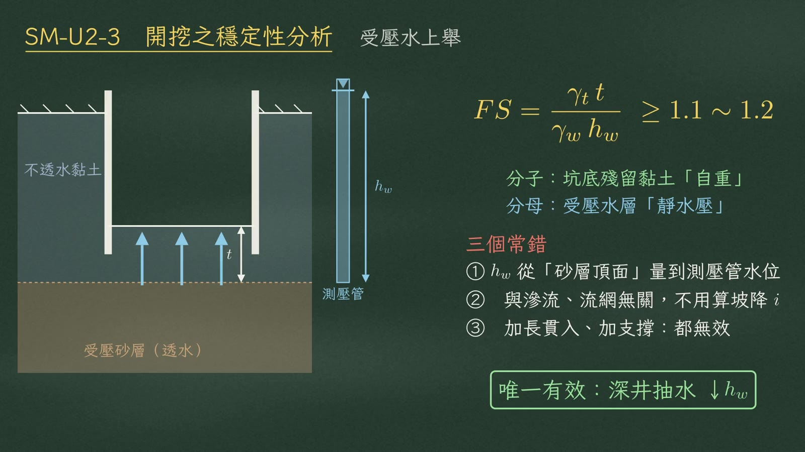
- \(h_w\) 要從砂層頂面量到測壓管水位，不是從地表。
- 這題跟滲流、流網無關，不用算坡降。
- 加長貫入、加支撐都無效。
10砂湧
砂湧是向上滲流把有效應力沖成零。
這一種插深真的有用，因為拉長了滲流路徑：插深 \(D\uparrow\Rightarrow L\uparrow\Rightarrow i_{exit}\downarrow\)。
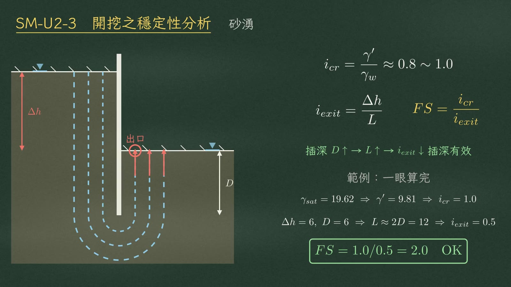
| 範例 | 數值 |
|---|---|
| 單位重 | \(\gamma_{sat}=19.62\Rightarrow\gamma'=9.81\Rightarrow i_{cr}=1.0\) |
| 滲流路徑 | \(\Delta h=6\ \text{m},\ D=6\ \text{m}\Rightarrow L\approx2D=12\ \text{m}\) |
| 出口坡降 | \(i_{exit}=6/12=0.5\) |
11對策題怎麼答
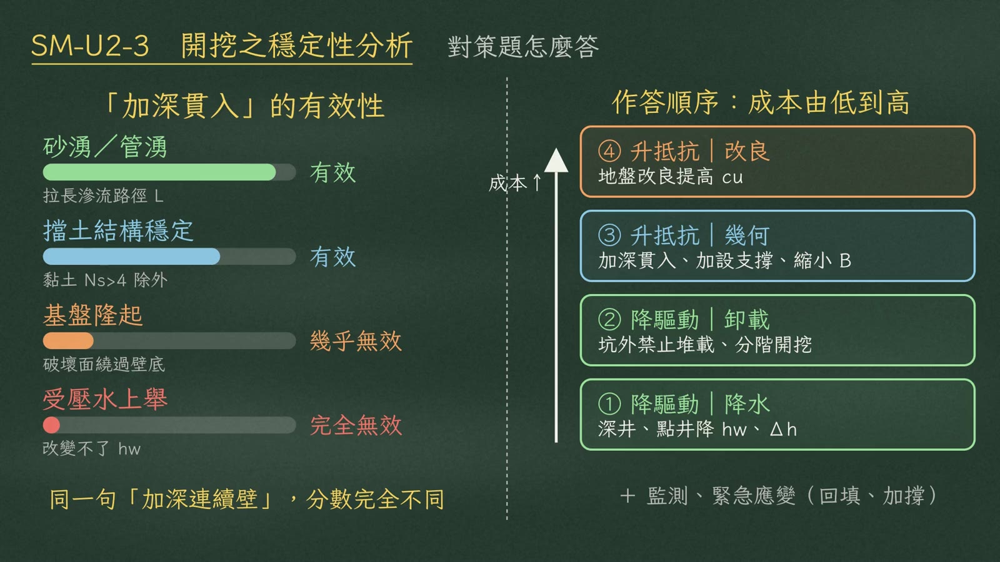
先看插深有沒有用：
| 破壞型式 | 加深貫入 | 理由（黑板） |
|---|---|---|
| 砂湧／管湧 | 有效 | 拉長滲流路徑 \(L\) |
| 擋土結構穩定 | 有效 | 但黏土 \(N_s>4\) 除外 |
| 基盤隆起 | 幾乎無效 | 破壞面繞過壁底 |
| 受壓水上舉 | 完全無效 | 改變不了 \(h_w\) |
再照成本由低到高排序：
| 順序 | 方向 | 對策 |
|---|---|---|
| ① 降水 | 降驅動 | 深井、點井降 \(h_w\)、\(\Delta h\) |
| ② 卸載 | 降驅動 | 坑外禁止堆載、分階開挖 |
| ③ 幾何 | 升抵抗 | 加深貫入、加設支撐（黑板另列：縮小 \(B\)） |
| ④ 改良 | 升抵抗 | 地盤改良提高 \(c_u\) |
最後補一句監測，和回填、加撐的緊急應變。
12總結
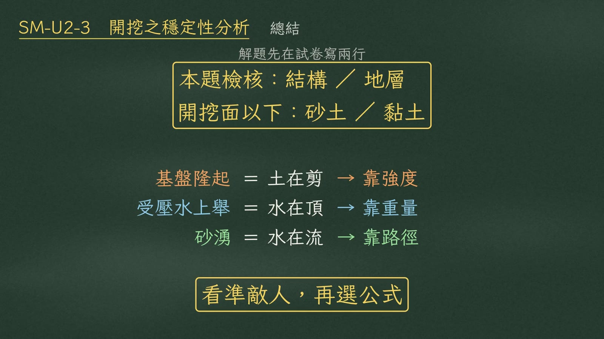
開挖面以下：砂土／黏土
| 破壞 | 本質 | 靠什麼 |
|---|---|---|
| 基盤隆起 | 土在剪 | 靠強度 |
| 受壓水上舉 | 水在頂 | 靠重量 |
| 砂湧 | 水在流 | 靠路徑 |